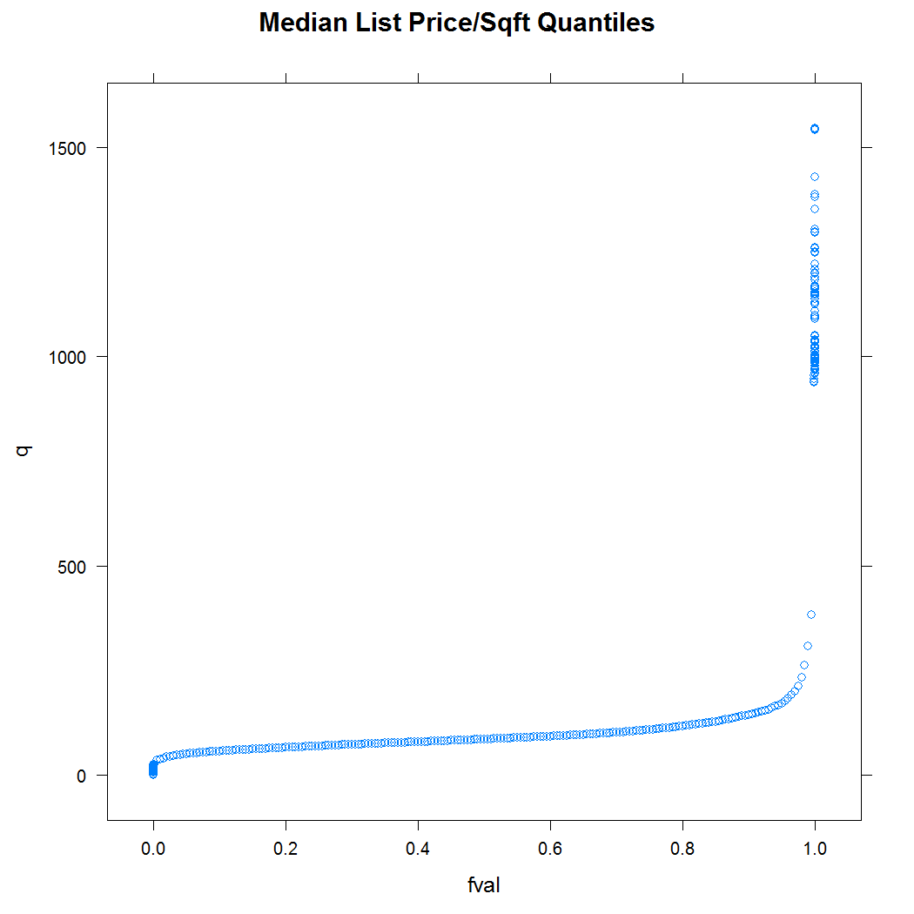
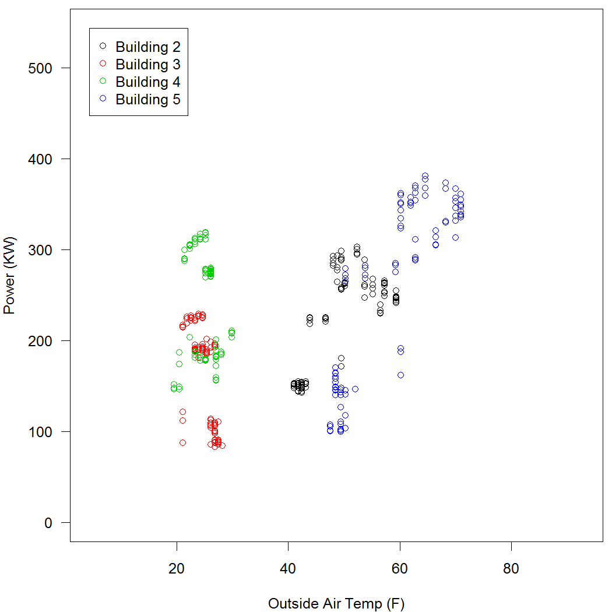

Download Demo Materials
The Tessera team will be presenting an interactive demo at the 2015 Conference on Statistical Practice in New Orleans on February 21, 2015.
Participants who would like to download the Tessera tools prior to the demo please follow these instructions. These tools will allow you to use and test Tessera on your own computer without Hadoop or a similar parallel processing backend.
If you do not already have the most recent version of R, (version 3.1.2), please download and install it here: http://cran.r-project.org.
Optional: You may find the RStudio development environment an easier way to program in R, but it is not necessary. You may download it here: http://www.rstudio.com/.
You will need the Firefox or Chrome browser installed on your computer. Internet Explorer and Safari sometimes have problems displaying Trelliscope views.
Open R and execute the following commands to install Tessera and other libraries you'll need for the demos:
install.packages(c("devtools", "plyr", "maps")) library(devtools) install_github("tesseradata/datadr") install_github("tesseradata/trelliscope") install_github("hafen/housingData")For Windows users: when installing
devtools, you may notice the following warning, which you can ignore:> library(devtools) WARNING: Rtools is required to build R packages, but no version of Rtools compatible with R 3.1.2 was found. (Only the following incompatible version(s) of Rtools were found:3.2) Please download and install Rtools 3.1 from http://cran.r-project.org/bin/windows/Rtools/ and then run find_rtools().Download the CSP Tessera demo files and unzip them on your computer: Tessera_demo_CSP2015.zip
The zip file contains a folder called demos. Set your working directory in R to this folder, using something like
setwd("mypaths/demos"). The demos folder contains a folder for each of the three demos: power_demo, netflow_demo, and housing_demo. Each demonstration folder has a single .R file which contains the code for the demonstration. Open that file in your editor of choice and begin!
We look forward to seeing you at CSP!
output: html_document
Housing Sales Data
The housing dataset contains data about housing sales aggregated to the
county level in the United States between 2008-10-01 and 2014-03-01. This
is Zillow.com data provided by Quandl.
The data variables are as follows:
| Variable | Description |
|---|---|
| fips | Federal Information Processing Standard, a 5 digit count code |
| county | US county name |
| state | US state name |
| time | date (the data is aggregated monthly) |
| nSold | number sold this month |
| medListPriceSqft | median list price per square foot |
| medSoldPriceSqft | median sold price per square foot |
Investigating the data with Trelliscope
The datadr, trelliscope, and housingData packages need to be imported for the following demo. We would also ask that you set the working directory to the location of the housing demo visual data base (vdb) directory. This will allow you, the user, to connect to the data base and interact with the trelliscope output.
# Load necessary libraries
library(datadr)
library(trelliscope)
library(housingData)
# Set the working directory. You will need to provide the complete file path.
setwd("housing_demo")
# Remove any left-over objects in the Global environment
rm(list = ls())
The following will launch two pre-made trelliscope displays:
- median list/sold price per sq ft vs time
- median list/sold price per sq ft vs time by state
Each panel represents the median listed (blue) and sold (pink) housing value plotted over time. Note that some of the panels only have one of the two values. The purpose of looking at pre-made displays is to get the user acquainted with the Trelliscope interface. We encourage you to explore the data and search for trends and anomalies. The following could will launch a Trelliscope browser from your local machine.
# To see the Trelliscope output, execute this block of code. We will
# go into further details below about how to set up your own Trelliscope
# visual data base.
vdbConn("vdb_housing", autoYes = TRUE)
# use this when running locally on your own computer
myport <- 8100
# myport <- Sys.getenv("TR_PORT") # use this on demo cluster
view(port = myport)
Challenge Questions
Now that you have the trelliscope display open, we have a few challenge questions that we would like to see if you can answer. No one's grading you on this task. In order to familiarize yourself with the interface and get a sense of the power of the trelliscope package, see if you can answer the following set of questions:
- Can you find the county with the largest positive slope in list price per square foot? Can you find the county with the largest negative slope? Hint: use the Table Sort/Filter or Univariate Filter
- Can you find the state that has the largest range of county trends in list price? Hint: use the Bivariate Filter.
- Can you find the county with the largest increasing price trend in the South? Hint: use the Table Sort/Filter to filter first.
Exploring the Housing Data Set
This activity will teach you how to create your own Trelliscope displays as well as some basic functionality of the Datadr package using the housing data set. We will be using the same data from the pre-made displays, but now you will be writing the code to generate the output. First, we will create a distributed data frame using the data. We will begin by importing the necessary packages, get a high level overview of the data, and create our first distributed data frame using the divide() function from datadr.
# If you have not already done so, import the necessary packages
library(datadr)
library(trelliscope)
library(housingData)
# Take a peek at the first 6 rows of housing
head(housing)
fips county state time nSold medListPriceSqft
1 06001 Alameda County CA 2008-10-01 NA 307.9787
2 06001 Alameda County CA 2008-11-01 NA 299.1667
3 06001 Alameda County CA 2008-11-01 NA NA
4 06001 Alameda County CA 2008-12-01 NA 289.8815
5 06001 Alameda County CA 2009-01-01 NA 288.5000
6 06001 Alameda County CA 2009-02-01 NA 287.0370
medSoldPriceSqft
1 325.8118
2 NA
3 318.1150
4 305.7878
5 291.5977
6 NA
# Let's get a sense of the dimensions of our data frame
dim(housing)
We are going to divide the data set by the variables "county" and "state". This kind of data division is very similar to the functionality provided by the plyr package.
# We will create a distributed data frame by dividing our data by county and state
byCounty <- divide(housing, by = c("county", "state"), update = TRUE)
# byCounty is a Divided Data Frame one of the primary data types in datadr
class(byCounty)
Calling the distributed data frame (ddf()) that was just created lets the user know the size of the object in terms of memory and other meta data specific to the object. In this ddf, each element is itself a data frame.
# Look at byCounty object
byCounty
Distributed data frame backed by 'kvMemory' connection
attribute | value
----------------+-----------------------------------------------------------
names | fips(cha), time(Dat), nSold(num), and 2 more
nrow | 224369
size (stored) | 16.45 MB
size (object) | 16.45 MB
# subsets | 2883
* Other attributes: getKeys(), splitSizeDistn(), splitRowDistn(), summary()
* Conditioning variables: county, state
# Look at first division. It will consist of a key-value pair.
# The key should look something like county=X|state=Y and the value
# should be the data frame corresponding to that key.
byCounty[[1]]
$key
[1] "county=Abbeville County|state=SC"
$value
fips time nSold medListPriceSqft medSoldPriceSqft
1 45001 2008-10-01 NA 73.06226 NA
2 45001 2008-11-01 NA 70.71429 NA
3 45001 2008-12-01 NA 70.71429 NA
4 45001 2009-01-01 NA 73.43750 NA
5 45001 2009-02-01 NA 78.69565 NA
...
A common procedure for EDA involves gathering a wide variety of summary statistics. The datadr package has some predefined functions for performing these calculations on distributed data frames / objects.
# Look at summary statistics for each key-value pair.
summary(byCounty)
# Basic data object information
length(byCounty) ## number of data divisions
names(byCounty) ## column names
getKeys(byCounty) ## data division keys (state & county names in this example)
We can get a sense of the number of rows in each element of the ddf as well as the amount of memory taken up by each element using splitRowDistn() and splitSizeDistn().
splitRowDistn(byCounty) ## percentiles of number of rows per division
splitSizeDistn(byCounty) ## percentiles of number of bytes per division
You can access the elements of the distributed data frame (ddf) using the key or by index, just like you would with a traditional list.
# A data division can be accessed by by its named key or by number
byCounty[["county=Benton County|state=WA"]]
$key
[1] "county=Benton County|state=WA"
$value
fips time nSold medListPriceSqft medSoldPriceSqft
1 53005 2008-10-01 137 106.6351 106.2179
2 53005 2008-11-01 80 106.9650 NA
3 53005 2008-11-01 NA NA 105.2370
4 53005 2008-12-01 95 107.6642 105.6311
5 53005 2009-01-01 73 107.6868 105.8892
...
# byCounty[[176]] # If you wish to access the data frame by index
Finally, you can use the drQuantile() function to compute the sample quantiles for the elements in the ddf object.
# Look at quantiles of median list price/sqft
priceQ <- drQuantile(byCounty, var = "medListPriceSqft")
xyplot(q~fval, data=priceQ, main="Median List Price/Sqft Quantiles")

Divide and Recombine
Suppose we are interested in figuring out the trend component of each time series in our distributed data frame. We can do this by creating a linear model for each subdivision and extracting the slope parameter. We wish to incorporate this information into our pre-existing ddf and use it in our analysis.
# Calculate linear model for each data division to see the trend in prices
# Create a function to calculate a linear model and extract the slope parameter
lmCoef <- function(x) {
data.frame(getSplitVars(x), slope=coef(lm(medListPriceSqft ~ time, data = x))[2])
}
# Test lmCoef on one division
kvApply(lmCoef, byCounty[[176]])
county state slope
time Benton County WA 0.007726753
# Add the function transform to the DDF
byCountySlope <- addTransform(byCounty, lmCoef)
# Now look at data with the transformation
byCountySlope[[176]]
$key
[1] "county=Benton County|state=WA"
$value
county state slope
time Benton County WA 0.007726753
# Recombine the slope data into a single data.frame
countySlopes <- recombine(byCountySlope, combRbind)
# Look at the recombined data
head(countySlopes)
county state county.1 state.1 slope
1 Abbeville County SC Abbeville County SC -0.0002323686
2 Acadia Parish LA Acadia Parish LA 0.0019518441
3 Accomack County VA Accomack County VA -0.0092717711
4 Ada County ID Ada County ID -0.0030197554
5 Adair County IA Adair County IA -0.0308381951
6 Adair County KY Adair County KY 0.0034399585
Sometimes you will want to actively combine two distributed data objects/frames together to create a new data set. We will demonstrate how to perform these types of operations using the drJoin() function.
# Look at geoCounty which contains more information about US counties
head(geoCounty)
fips county state lon lat rMapState rMapCounty
1 01001 Autauga County AL -86.64565 32.54009 alabama autauga
2 01003 Baldwin County AL -87.72627 30.73831 alabama baldwin
3 01005 Barbour County AL -85.39733 31.87403 alabama barbour
4 01007 Bibb County AL -87.12526 32.99902 alabama bibb
5 01009 Blount County AL -86.56271 33.99044 alabama blount
6 01011 Bullock County AL -85.71680 32.10634 alabama bullock
# Divide geoCounty on county and state just like we did with the housing data
geo <- divide(geoCounty, by = c("county", "state"))
geo[[1]]
$key
[1] "county=Abbeville County|state=SC"
$value
fips lon lat rMapState rMapCounty
1 45001 -82.45851 34.23021 south carolina abbeville
# Get some wikipedia data on counties and divide by county/state
wikiByCounty <- divide(wikiCounty, by = c("county", "state"))
# Join divided housing, geo and wiki data together
# This forms a Distributed Data Object (DDO)
joinedData <- drJoin(housing = byCounty, slope=byCountySlope, geo = geo, wiki=wikiByCounty)
# Note that this is no longer a distributed data frame
class(joinedData)
joinedData[[176]]
length(joinedData)
# Filter dataset to remove divisions without housing sales data
joinedData <- drFilter(joinedData, function(x) {
!is.null(x$housing)
})
# See that the length has decreased - some data divisions have been removed
length(joinedData)
Trelliscope: an interactive divide and recombine visualization tool
The data is now ready to be ingested into Trelliscope. In this section, you will learn how to connect to a visual data base, create basic functions for plotting, and develop and use cognostics to improve data interpretability. A cognostic is usually, but not always, a summary statistic or some form of meta data to be included along with plots. These values can be useful in determining patterns or anomalies in visual displays.
# Define a visualization database directory where the plots and metadata
# will be saved. Unless a complete file path is specified, the vdb will be
# generated in the working directory.
vdbConn("vdb_housing", autoYes=TRUE)
vdb connection object: [name:none]; path=C:\Users\venz586\Documents\docs-csp2015\vdb_housing
# Define a plot function
timePanel <- function(x) {
xyplot(medListPriceSqft + medSoldPriceSqft ~ time,
data = x$housing, auto.key = TRUE, ylab = "Price / Sq. Ft.")
}
# Test the plot function on a single division
kvApply(timePanel, joinedData[[176]])

We have defined a simple plot function. It would be useful to define a set of cognostics that can give us a large set of angles with which to attack the data anlysis problem at hand. Some simple cognostics are included in the trelliscope package such as cogMean() and cogRange() which are self-explanatory. You are free to define any other measure of the data using the cog() function.
# Define a cognostics function: this is used to define information and
# statistics that will be available in the Trelliscope UI for sorting and
# filtering and also to display/link useful meta information.
priceCog <- function(a) {
x <- a$housing
st <- getSplitVar(a, "state")
ct <- getSplitVar(a, "county")
zillowString <- paste(ct, st)
zillowString <- gsub(" ", "-", zillowString)
list(
fips = cog(x$fips[1], desc = "fips code"),
region = cog(state.region[state.abb == ifelse(st == "DC", "MD", st)]),
division = cog(state.division[state.abb == ifelse(st == "DC", "MD", st)]),
slope = cog(a$slope$slope, desc = "list price slope"),
meanList = cogMean(x$medListPriceSqft),
meanSold = cogMean(x$medSoldPriceSqft),
listRange = cogRange(x$medListPriceSqft),
soldRange = cogRange(x$medSoldPriceSqft),
nObs = cog(length(which(!is.na(x$medListPriceSqft))),
desc = "number of non-NA list prices"),
lat = cog(a$geo$lat, desc = "county latitude"),
lon = cog(a$geo$lon, desc = "county longitude"),
pop2013 = cog(log10(a$wiki$pop2013), desc = "log base 10 population in 2013"),
wikiHref = cogHref(a$wiki$href, "wiki link"),
zillowHref = cogHref(sprintf("http://www.zillow.com/homes/%s_rb/", zillowString), "zillow link")
)
}
# Test on a single division
kvApply(priceCog, joinedData[[176]])
$fips
[1] "53005"
$region
[1] "West"
$division
[1] "Pacific"
$slope
[1] 0.007726753
$meanList
[1] 114.1784
$meanSold
[1] 109.8766
$listRange
[1] 15.04786
$soldRange
[1] 12.5142
$nObs
[1] 66
$lat
[1] 46.23413
$lon
[1] -119.5155
$pop2013
[1] 5.265963
$wikiHref
[1] "<a href=\"http://en.wikipedia.org/wiki/Benton_County,_Washington\" target=\"_blank\">wiki link</a>"
$zillowHref
[1] "<a href=\"http://www.zillow.com/homes/Benton-County-WA_rb/\" target=\"_blank\">zillow link</a>"
# Create the display: this creates and saves display files and information in
# the vdb directory defined above
makeDisplay(joinedData,
name = "list_sold_vs_time_datadr_tut",
desc = "List and sold price over time",
panelFn = timePanel,
cogFn = priceCog,
width = 400, height = 400,
lims = list(x = "same"))
# Open Trelliscope in a browser
myport <- 8100 # use this when running locally
# myport <- Sys.getenv("TR_PORT") # use this on demo cluster
view(port=myport)
output: html_document
Computer network traffic
The NetFlow dataset is a simulated dataset of computer network traffic.
The packet data is captured at the firewall and aggregated into session
records. Each record identifies the source and destination of the first
seen packet in that session. You can see more information about the data
here.
The variables in the data are described below:
| Variable | Description |
|---|---|
| dateTimeStr | date/timestamp in the form 20130411085433.710938 (2013-04-11 08:54:33.710938) |
| ipLayerProtocol | IP layer protocol code |
| ipLayerProtocolCode | text name of IP protocol code (e.g. 6=TCP) |
| firstSeenSrcIp | IP address of the source of the first packet seen |
| firstSeenDestIp | IP address of the destination of the first packet seen in this session |
| firstSeenSrcPort | source port of the first packet captured in this session |
| firstSeenDestPort | destination port of the first packet captured in this session |
| moreFragments | if nonzero, this session continues into a subsequent record |
| contFragments | if nonzero, this record is not the first session record but a continuation |
| durationSeconds | session duration in seconds |
| firstSeenSrcPayloadBytes | total payload bytes in this session from packets originating at the firstSeenSrcIp |
| firstSeenDestPayloadBytes | total payload bytes in this session from packets originating at the firstSeenDstIp |
| firstSeenSrcTotalBytes | total header+payload bytes in this session from packets originating at the firstSeenSrcIp |
| firstSeenDestTotalBytes | total header+payload bytes in this session from packets originating at the firstSeenDstIp |
| firstSeenSrcPacketCount | total number of packets in this session originating at the firstSeenSrcIp |
| firstSeenDestPacketCount | total number of packets in this session originating at the firstSeenDstIp |
| recordForceOut | if nonzero the record was flushed to data file before session timeout (15 minutes) usually by program shutdown |
Preliminaries
Let's set the working directory for this example. You need to change the path in the call to setwd() below to correctly point to the netflow_demo directory.
setwd("netflow_demo")
And let's remove any possible left-over objects in the Global environment:
rm(list = ls())
And load the requisite packages:
library(trelliscope)
library(plyr)
Pre-made Trelliscope Displays
The following will launch two pre-made trelliscope displays:
- Hourly counts of connections vs time
- Hourly counts of connections vs source/destination where each panel shows data for a specific host or destination IP address.
The purpose of this activity is to launch the trelliscope display and then explore the data---to look for patterns, bad data, anomalies, etc. The code required to generate these displays is shown next.
vdbConn("vdb_netflow", autoYes = TRUE)
myport <- 8100 # use this when running locally on your own computer
# myport <- Sys.getenv("TR_PORT") # use this on demo cluster
view(port = myport)
Challenge question
The following question is provided, free of charge, to help you become better acquainted with the trelliscope interface. The question will not be graded; it is strictly for learning purposes.
- There is a set of workstations that were infected with malware and now form a botnet. This botnet has strated a recurring Denial of Service attack against an external IP address. Can you find the machines in question? (Hint: Look for high numbers of outgoing connections)
Trelliscope and Hadoop
The time has come for you, the user, to do some of the coding work. In particular, the following demo will teach you how to use hadoop and trelliscope together to visually analyze a large and complete data set. Luckily for us, we've already covered this demo here. The necessary information will be covered in sections 2.2 and 2.3 of the R boot camp. We encourage you to go step by step through the process, particuarly since Hadoop has a steep learning curve.